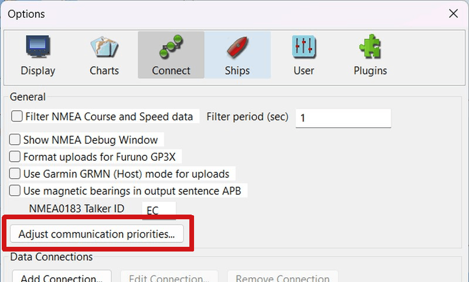
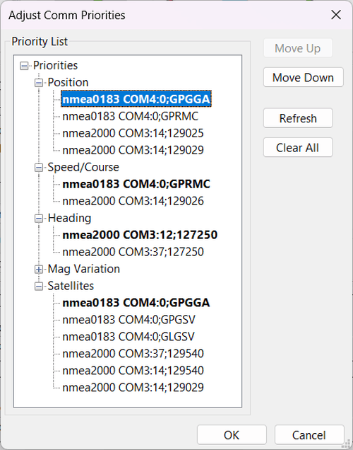
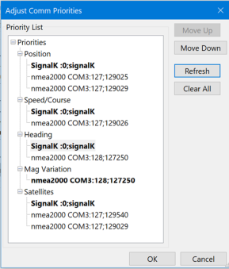
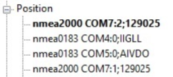
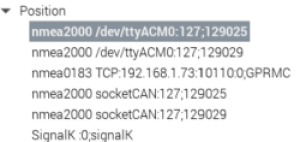

Data Priorities
Adjust Communication Priorities
In the case where the same kind of navigational data is received from different sources, we need to decide which is the main and most trustworthy source. OpenCPN prioritization logic is based on position, Lat/Lon, data. A source or device used for the ship’s position will also, by default, be used for course/speed (COG/SOG), magnetic variation and GNSS status, if available.
Several position sources (GNSS receivers) are normally connected to OpenCPN. For security reasons it’s common to have at least two available on board: either two single sensors or one standalone receiver and the receiver in a AIS transceiver. Both cannot normally be used simultaneously in OpenCPN. Also, since they are likely not mounted on the same physical position, the ship symbol in OpenCPN would “jump”, which is more obvious when zoomed in. We need to give priority to one of the two sources, and at the same time be sure the lower priority source will be used in the event of malfunction of the first.
These are the basics for the priority list. By default, the first received position source will be the one with priority. This will also set prioritization order for other navigational data mentioned above.
Adjust communication priorities

The user can edit the prioritization order at any time. Click the button Adjust communication priorities….
Two Examples

A quite common collection of NMEA 0183 serials are to the left and some network and serial NMEA 2000 connections are to the right. For the left collection, no magnetic variation source was found and plugin WMM will be used. The upper source has priority and will be used if available. The source with bold font is the one in use for the moment. If the priority source is temporarily lost, the next source down will be used and marked in bold. As soon the priority source recovers, that one will again be active and bold.
Change priority order
Always start by setting Position Priority.
Position defaults to be “master” of priority. Select the desired source and move it up to the top position by the button Move Up. In the NMEA 0183 example above “nmea0183 COM7:0:GPRMC" is moved to top. This device is newer and more stable and therefore has priority. Now when a position source row is moved to top, corresponding sources for Speed/Course, Magnetic Variation and Satellites are automatically moved to top. The upper source is always first in the priority list. Moving a source down on the list will have the opposite effect.
After Position Priority is set, study the other priority types and consider the relevance. Now they can be individually changed if desired. If, for example, Magnetic Variation from one source is known to be “out of date”, select and move another source to the top of the list.
Heading Priority is not automatically adjusted when position priority is set. If available, and more than one, you should Move Up/Down the most trustworthy source to be on top of the Priority List.
Source details

Study the position sources on above pictures. Each row contains three fields:
-
Protocol Port/Address
-
Source ID
-
Message -Protocol is either of available connection types.
Port is a serial RS232|USB port or a network address:port (socketCan e.g. can0 is for Linux only).
Source ID is a identifier used when the same message are available from different devices on the same port/address. See the NMEA 2000 COM7:*1*:129025 vs NMEA 2000 COM7:*2*:129025 above. Note that PGN 129025 is present from two devices on the same N2k bus. They have a unique ID to permit setting priority. Every device on a N2k bus has a unique ID (sadly, the Unique ID can vary over time).
Message is a designation for an NMEA 0183 message, an NMEA 2000 PGN or SignalK in general.
Buttons on “Adjust communication priorities”
Move up – Move Down
A selected row in the priority dialog will move up or down. When moved up the priority order will change. The upmost source will always be prioritized, if available. If for any reason no data is received from that source, the next source in the list will be used instead and marked with a bold font. If the priority source is again receiving relevant data, that will again be used. Again, it will be indicated by the bold font.
Refresh
If connections are changed while the list is shown, e.g. one source is down or up again, the Refresh button will reload and update the priority table.
Clear all
As mentioned above the priority table is saved to the config/ini file to be reused at the next OpenCPN start. If for any reason, e.g. replacing a connected device with another, the priority table may need to be rebuilt. Use the Clear All button and the entire priority table will be cleared out (also in the config/ini file). After that, a Refresh is needed, or close and reopen the dialog. It’s recommended to close the priority dialog and wait a minute or two to let all sources be used. Then reopen the dialog and set the new priority list order as desired.
Dashboard priority
The inbound plugin Dashboard has no own priority list although OpenCPN’s priority list has a direct impact on some instruments. All navigational data in OpenCPN priority table, including Position, course/speed (COG/SOG), satellites and heading are also used by Dashboard. For example, the GNSS Status graph shows data from the same satellite source as in use at the OpenCPN priority list.
For other instruments where data is not used by OpenCPN itself, Dashboard Plugin has its own inbound priority logic. If the same data, e.g. true wind or depth, are received from several sources, Dashboard Plugin prioritizes in the following order:
-
Data used by OpenCPN itself, as mentioned.
-
NMEA 2000. If the same PGN is received from several sources the first received is used. See also Source details above how they are distinguished.
-
SignalK. Any needed filtering would be performed in SignalK.
-
NMEA 0183. – First received source is used. If the same NMEA 0183 message is received from several sources both will be used and “jumping” values may appear. Use the Connections filter function .